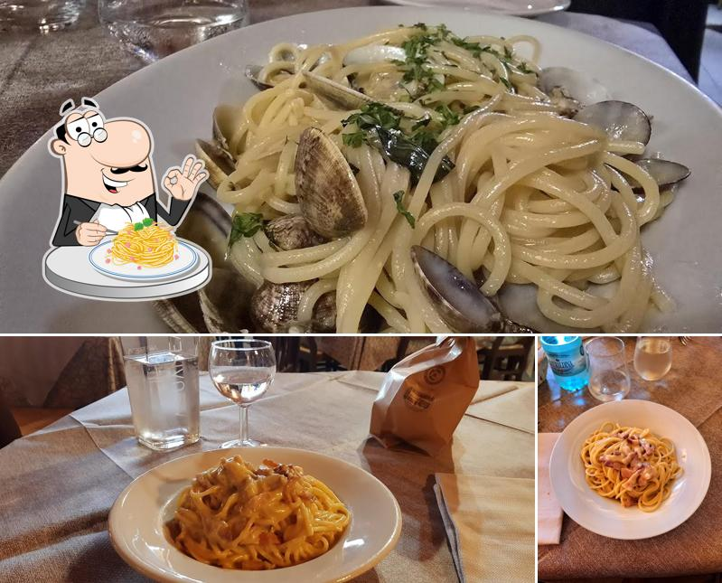
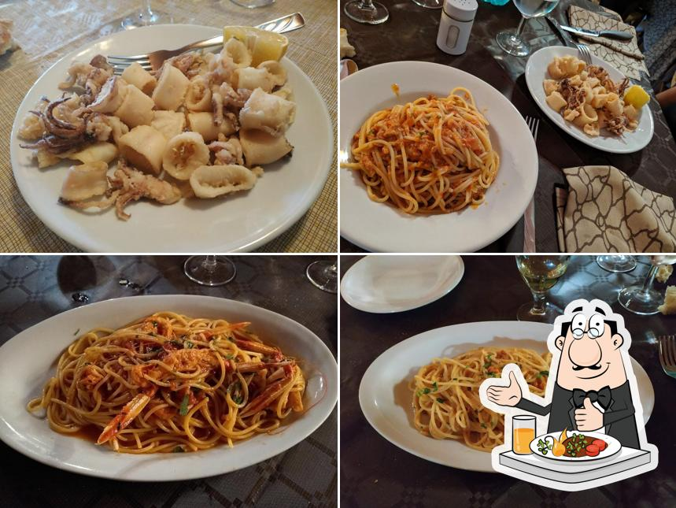
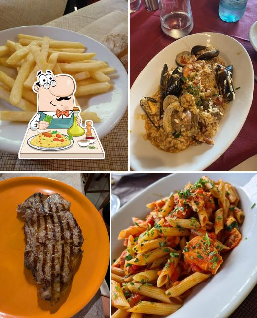
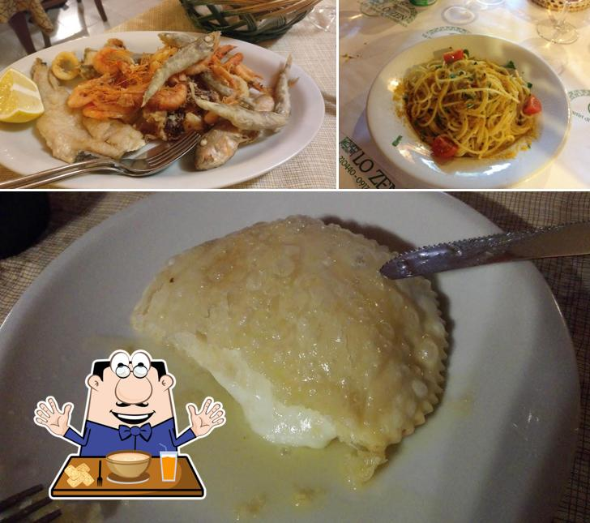
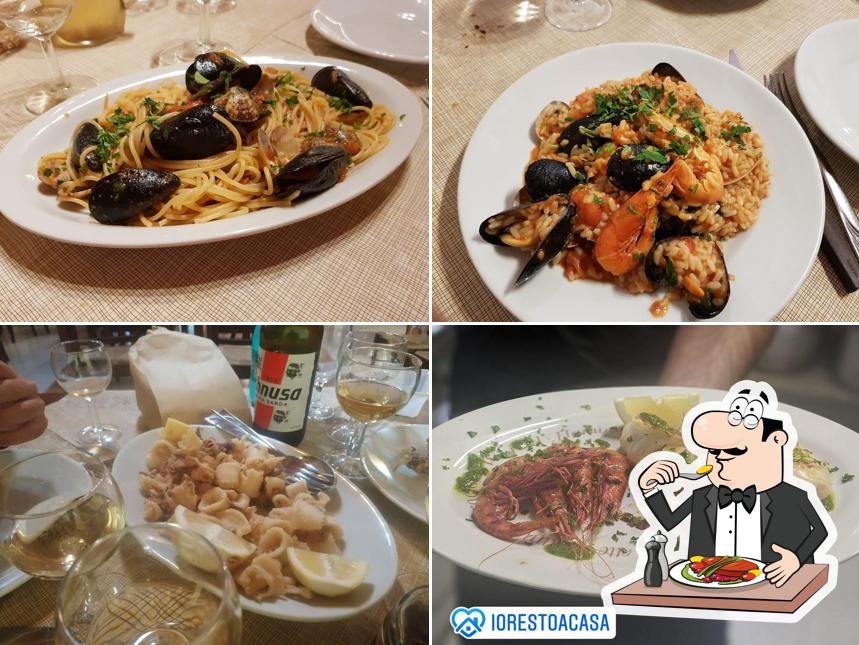
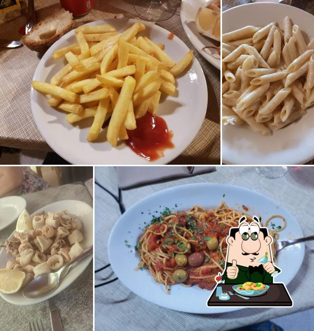
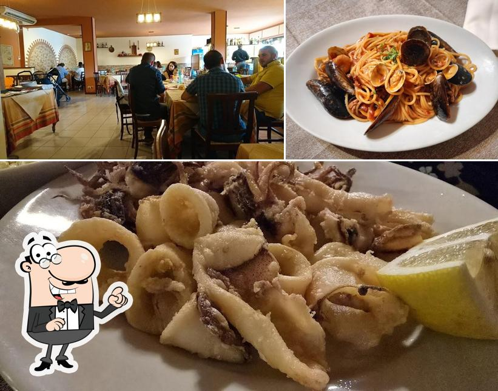
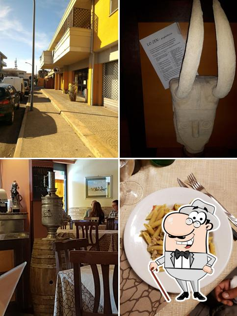

accoglienza
Cristina Racis
La padrona di casa. Accoglie, ricorda i nomi, non lascia mai un tavolo senza attenzione.
dalla famiglia Racis · oristano, sardegna
C'era una volta una spaghetteria dove il mare finiva nel piatto
e il tempo, a tavola, smetteva di correre.
la storia
Tre fratelli, una sala, un'isola intera da sfamare. Cristina, Samuele e Federico hanno trasformato una spaghetteria di quartiere nel posto dove Oristano viene a cena — e torna.
Qui il pesce arriva al mattino dal mercato, la bottarga profuma di stagione e ogni piatto arriva in tavola fresco, abbondante e sincero. Porzioni da protagonisti, prezzi onesti, e una regola che non è mai cambiata: mangiare bene deve restare semplice.
«Non solo spaghetteria!!»
— dicono loro. E lo dicono da una vita.
La padrona di casa. Accoglie, ricorda i nomi, non lascia mai un tavolo senza attenzione.
Tra i fornelli, il mare di Sardegna diventa sugo. Niente mezze misure: il piatto o è da protagonista, o non esce.
L'uomo di sala. Insieme ai fratelli tiene viva la promessa del locale: mangiare bene, pagare onesto.
la critica
Migliaia di ospiti, un solo verdetto: si torna.
«Cibo ottimo a prezzi modici. Il menù offre davvero una varietà di prodotti di ogni tipo. Consiglio vivamente.»
«Non ne conoscevamo l'esistenza, scoperto per caso, ma torneremo sicuramente! Buon cibo a prezzi modici.»
«Come sempre: locale con clima familiare, ottimo menù e prezzi ragionevoli.»
«Locale ampio e pulito. Personale attento e simpatico. Porzioni gustose e abbondanti. Consigliato per coppie e famiglie.»
«Personale attento, cibo buono e abbondante, con una gran scelta — naturalmente di primi: non solo pasta, anche risotti…»
«La pasta di mare è eccellente e il servizio impeccabile. Da non perdere a Oristano.»
la fotografia
Foto vere, scattate a tavola: non mentono mai. Clicca per ingrandire.








la sala
Trovate il vostro posto a tavola.
| Lunedì | chiuso |
| Martedì | 13:00 – 14:45 |
| Mercoledì | 13:00 – 14:45 · 20:00 – 22:45 |
| Giovedì | 13:00 – 14:45 · 20:00 – 22:45 |
| Venerdì | 13:00 – 14:45 · 20:00 – 22:45 |
| Sabato | 13:00 – 14:45 · 20:00 – 22:45 |
| Domenica | 13:00 – 14:45 |
pronti a tavola
Un messaggio e il tavolo è vostro. Asporto, compleanni, cene di famiglia: la sala regge tutto — perfino chi non sa scegliere il dolce.